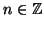
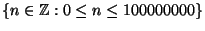

Next: The ADT Stack
Up: Abstract Data Types
Previous: Abstract Data Types
Contents
Index
One of the simplifications made in modern abstract algebra is the
identification of appropriate structures in which to consider
different problems. Thus for example Galois theory is most natural
expressed working over a field, while the study of the abstract
Euclidean algorithm is done in an integral domain. Each is a type of
ring with additional structure, and each has the properties in common
to all (commutative) rings. The gain is often suggested to be one of
generality -- that as soon as you know something is an integral
domain, then you can use all the available results. But another gain
is that the set of allowed operations is constrained. Thus there is
no point in thinking about dividing in an integral domain, because the
concept is not available, even though in a practical example of an
integral domain, such as
, given
, the inverse, 1/n is
perfectly well defined.
A similar abstraction is useful when considering algorithms. It
forces attention on the underlying structure, and disallows ad-hoc
manipulations. The abstraction is known as an Abstract Data Type or (sometimes,
for brevity) ADT. And like the abstract structures of algebra, an
understanding of their utility can only follow a set of definitions,
and simple examples to illustrate that the structures occur frequently
in practice.
As a first example consider a restricted class of integers, say
. There are some situations
when it would be helpful to have a name for such a class. And it may
be helpful to name an object of this type as
annualSalaryInPence. The set of allowed operations can then be
sensibly restricted. Thus while it makes sense
to compute
1000000 - 25, doing arithmetical operations with an item
of type AnnualSalaryInPence and an item of type
AgeInYears is likely to be nonsense.3.1
We next consider some Abstract Data Types.
Subsections
Next: The ADT Stack
Up: Abstract Data Types
Previous: Abstract Data Types
Contents
Index
Ian Craw
2001-04-27